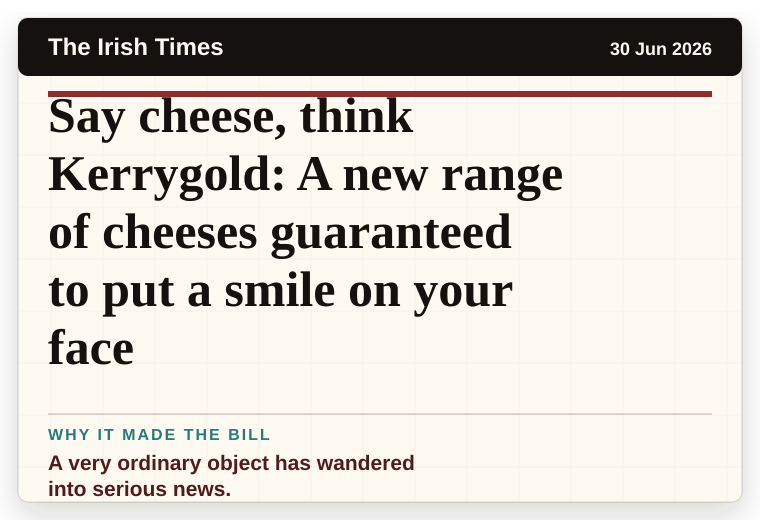
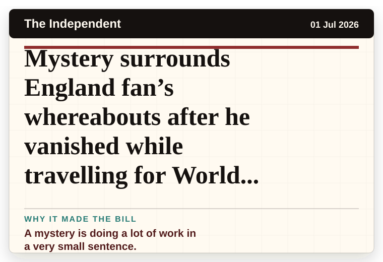
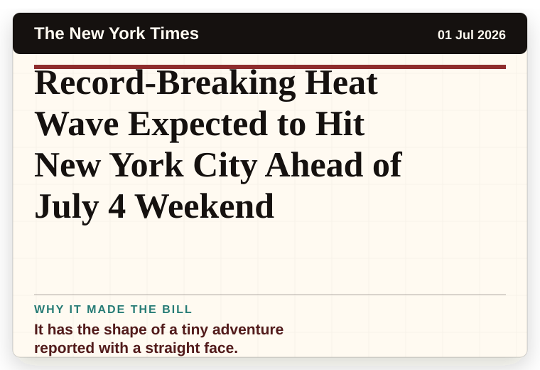
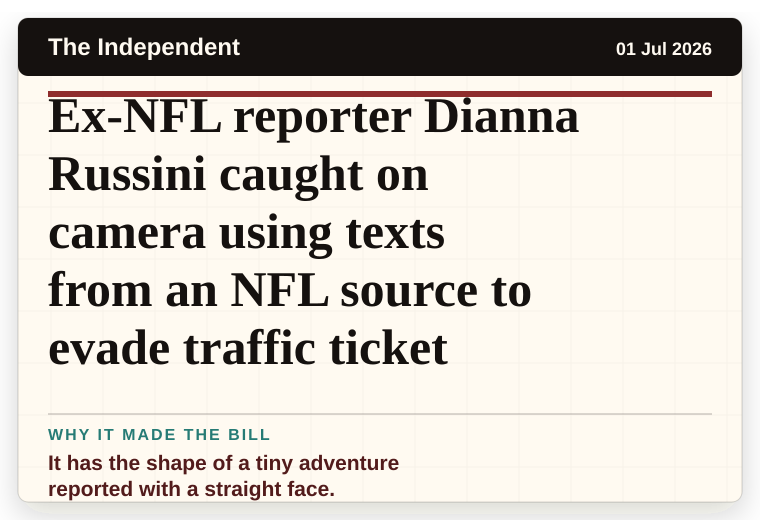

Daily Star Weird News
United Kingdom
Top 20 weird food combos Brits love - and one will surprise you
The headline is already trying not to laugh.
The latest daily picks, linked back to the original sources. Search the room, pick a source, or follow a headline out to the full story.
Record updated: 01 Jul 2026, 08:49 AM AEST
Showing 14 headline candidates from the refresh run completed on 01 Jul 2026, 08:49 AM AEST.
The headline is already trying not to laugh.

The headline is already trying not to laugh.

The headline is already trying not to laugh.

The scale is doing deadpan comedy.

The headline is already trying not to laugh.

A mystery is doing a lot of work in a very small sentence.

A mystery is doing a lot of work in a very small sentence.

The word chaos gives it open-mic energy.

It has the shape of a tiny adventure reported with a straight face.

A very ordinary object has wandered into serious news.

A mystery is doing a lot of work in a very small sentence.
It turns a small thing into a public argument.

It has the shape of a tiny adventure reported with a straight face.

It has the shape of a tiny adventure reported with a straight face.